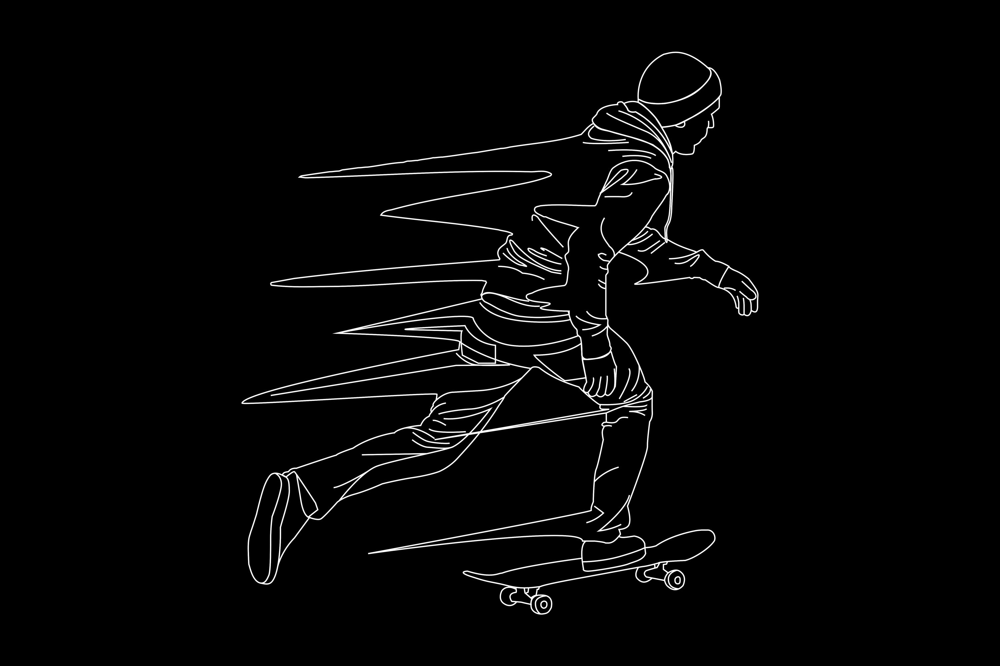

auction results
..will be here
Own an authentic copyrighted artifact of the early 21st century digital revolution.
The revolution will be minted.
..will be here
tt
m
From the creative depths of Moreno Valley, CA grew a timeless luxury lifestyle clothing line, branding agency and music Label, Dre Bigg$ and Treem Heff grew up Southern California sports stars.

They also shared a unique business, fashion and entrepreneurial outlook on what was to become of their futures.
more about us
In 2007 the beginning ideas of UTB Lifestyle LLC were started in the dorm rooms of Arizona State University and Cal Baptist University on sidekick 3’s via Tmail; Dozens of copy written logos were created and from these trademarks rose a new age Millennial Lifestyle Brand.
Mixing art, textiles, prints and collaborative ventures with Sylvia Rhone (via Sony/ Epic) Jonny Shipes (Cinematic/ The Smokers Club) and Wiz Khalifa (Taylor Gang) have made UTB a true staple in the culture.
Fashion is not just about clothes, but about creating an allure that withstands the test of time. Much has been proven, but the story is still being written. $tay tuned to see what’s next…
Sketches Scanned on 18th of July.

28th of July
EPS Vectors created (Smiley1 & Smiley2)

1st printing of UTB Smiley shirts

UTB Visual Arts Copyright registered

UTB Season 1 release
November 21
Emojis release in Japan (only)
Taylor Gang Lifestyle apparel official release with Wiz Khalifa

Stars like Diddy wearing UTB apparel

Taylor Gang official video releases with UTB logo embedded throughout the video via personal request

Emojis available in USA when the emoji keyboard was added to iPhone iOS 5

Money mouth face emoji submitted to unicode by Mark Davis & Peter Edberg

Money mouth face added to emoji 1.0 as part of Unicode 8.0